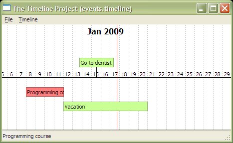
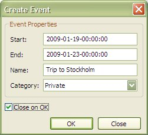

This is the User's Guide for Timeline version 0.1.0.
Timeline is a cross-platform application for displaying and navigating information on a timeline. With the application it is easy to quickly display different periods in time with different kinds of information on the timeline.
The application is built with Python and uses wxPython as graphics library.
Here are some screenshots of Timeline showing different zoom levels.

| Version | Release Date | Note |
| 0.1.0 | 2009-04-11 | First working version. |
Timeline has been tested with the following platforms and versions of Python an wxPython:
| Platform | Python | wxPython |
| Windows (XP) | 2.5.2 | 2.8.8.1 |
| Linux (Debian Etch) | 2.4.4 | 2.8.9.1 |
We appreciate any feedback on this application. Since this is the first version, it only has basic functionality (but still should be useful) and we are aware of that you may want more features. Our goal is to further develop the application so suggestions for new functionality and features are welcome.
The best way to get in contact with the project is to send an email to the project's user mailing list. For more information on how to do that, go to http://lists.sourceforge.net/lists/listinfo/thetimelineproj-user.
Go to the download page located at http://sourceforge.net/project/showfiles.php?group_id=241839 and look for a file called thetimelineproj-0.1.0.zip.
Before you can run Timeline you have to install the products below. Further instructions on how to download and install these can be found on each product's home page.
| Product | Link |
| Python | http://www.python.org |
| wxPython | http://www.wxpython.org |
To begin with, extract the downloaded Timeline zip file into a directory of your choice.
To run the application, use this command:
python <path-to-timeline-directory>/main.py [options]
Preferable you create a shortcut on your platform that issues this command. What options are available is displayed with the following command:
python <path-to-timeline-directory>/main.py --help
The basic idea is to display events on a timeline. An event can be a single point in time or span over a time period. The user adds events to the timeline. Events can also be removed or changed.
When the application is started, select New from the File menu and enter a name of a file in the dialog box that opens. This is the name of the file in which information about your events will be stored. Next time you start the application you can choose to open the same file again.
When this is done, double click somewhere on the timeline. This will open a dialog box in which you enter a name for an event. Click the OK button to save the event. Now you will see a single point event above the middle of the screen.
Next, hold the Ctrl-key down, click and drag the mouse to mark a time period, and release the mouse button. Again the event dialog box will display and you enter a name of the event and click OK. Now you will also see a period event displayed under the middle of the screen.
Try the mouse wheel, and you will see the timeline scroll.
Try the mouse wheel while holding the Ctrl-key down and you will see the timeline zoom.
The vertical red line indicates the current time.
Hoovering an event will display the full description in the status bar.
Adding events is done by opening the Create Event dialog. When you have filled in all the event properties in the dialog you click the OK button to save the event in your event file. If you change your mind about creating an event you must click the Close button or press the Esc key.
The Create Event dialog can be opened in the following ways
The following properties can be defined for one event:
Here is an example of how data entered in the dialog can look like:

One or more events can be deleted at the same time. To delete events you first select them and thereafter presses the Delete key.
Before the event is deleted the deletion must be acknowledged in the dialog box that appears when the Delete key is pressed.
An event is selected by clicking within the rectangle representing the event. The event is deselected by clicking on it once again. To select more than one event, hold the Ctrl-key down while selecting events.
Categories are used to group events. An event can belong to one and only one category. All events that belong to the same category are displayed with the same background color. The color to be used is defined by the category.
If you want to edit the categories you open the Edit Categories dialog. This is done by Select the menu Timeline -> Edit Categories. The dialog looks like this:

You create a new category by clicking the Add button and thereafter filling in the attributes of the category in the dialog that appears.

You delete a category by selecting it in the listbox and clicking the Delete button. You thereafter have to acknowledge the delete in the dialog that appears. When you delete a category, all the events that belonged to this category are associated with the special category None.